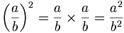

Front and Back: Kile and LaTeX
Introduction
LaTeX is a document preparation system based on Donald Knuth's TeX. LaTeX provides the facilities needed to typeset articles, books, and other documents. Kile is a KDE-based environment for editing LaTeX documents, which simplifies the process and provides easy access to commonly used commands and tags.
As well as offering short cuts to the various commands used to convert LaTeX documents, and to launch the viewers for these formats, Kile provides an output window, so you can view an errors which may have been present in your document, and an embedded Konsole window, so you can easily launch any other commands you wish without switching windows.
TeX is used by so many of the various documentation tools available for Linux that LaTeX is worth learning, if for no other reason than it's available almost everywhere. TeX (and, by extension, LaTeX) still has the best rendering available for mathematics, so if you ever plan to typeset a complicated formula, you would do well to learn it. LaTeX is being used by Project Gutenberg for mathematical books, and a subset of TeX's math syntax is used by Wikipedia.
If you've written HTML before, basic LaTeX shouldn't be too hard
to grasp. For example, text in italics is written like this
in HTML: <i>text in italics</i>; and like
this in LaTeX: \textit{text in italics}.
Coming Clean
Now, there isn't much to be said about using Kile. Kile
is useful - it certainly saves a lot of time to be able to
select the tags you want from a menu. It also saves time to use the
document creation toolbar - the commands these tools invoke can be
summarized, left to right (see below), as follows:
- latex filename.tex
- kdvi filename.dvi
- dvips filename.dvi -o filename.ps
- kghostview filename.ps
- pdflatex filename.tex
- kpdf filename.pdf
Note that Kile uses pdflatex. This, in my opinion, is not the best way to generate a PDF file from LaTeX. In my experience, pdflatex has failed to include images. My preferred way to generate PDF files (using an article about SuperKaramba that I never got around to finishing as an example) is:
latex sk.tex dvips sk.dvi -o sk.ps ps2pdf sk.ps sk.pdf
Starting a New Document
Kile is a KDE application, so starting a new document is done
the same way as with any other KDE application:
File->New, or Ctrl-N. Kile offers a
choice of "Empty Document", "Article", "Book", "Letter", or
"Report". I'll presume you want to use "Article" - I'll be using
(parts of) this article as an example - but it shouldn't be too
difficult to use the other templates.
\documentclass[a4paper,10pt]{article}
%opening
\title{}
\author{}
\begin{document}
\maketitle
\begin{abstract}
\end{abstract}
\section{}
\end{document}
Not too scary, I'm sure you'll agree! Most basic commands have
the same formula: \command{parameter}. There are some
differences, like \maketitle, but it's true for most
of the common commands. Filling this out looks like this:
\documentclass[a4paper,10pt]{article}
\usepackage{hyperref}
%opening
\title{Front and Back: Kile and LaTeX}
\author{Jimmy O'Regan}
\begin{document}
\maketitle
\begin{abstract}
Kile is a user-friendly frontend to \LaTeX{}. This article discusses using
Kile, and using \LaTeX{} without it.
\end{abstract}
\section{Introduction}
\href{http://www.latex-project.org/}{\LaTeX{}} is a document preparation
system based on Donald Knuth's \TeX{}. \LaTeX{} provides the facilities needed
to write articles, books, and other documents.
\href{http://kile.sourceforge.net}{Kile} is a KDE-based environment for editing
LaTeX documents, which simplifies the process and provides easy access to
commonly used commands and tags.
Note the \usepackage{hyperref} line: this tells
LaTeX to use the hyperref package, which adds some extra commands
for Web links (I use it for the \href{}{} command).
One difference between HTML and LaTeX is that LaTeX does not
require a command for a new paragraph; you simply leave a blank
line between paragraphs, and LaTeX figures it out. LaTeX has a
number of special characters which HTML doesn't: most of these can
be used by escaping them with a backslash ('\'), but the backslash
itself must be inserted as $\backslash$, because a
double backslash ('\\') is used to force a line break. Here is a
table of some common HTML tags and their LaTeX equivalents:
| HTML | LaTeX | |
|---|---|---|
| Italics | <i>Italics</i> | \textit{Italics} |
| Bold | <b>Bold</b> | \textbf{Bold} |
| Typewriter | <tt>Type</tt> | \texttt{Type} |
| Hyperlink | <a href="http://">text</a> | \href{text}{http://} |
| Heading | <h1>Heading</h1> | \section{Heading} |
| Subheading | <h2>Subheading</h2> | \subsection{Subheading} |
| < | < | $<$ |
| > | > | $>$ |
| & | & | \& |
Environments
More complicated things in LaTeX are done in different environments - these commands look like this:
\begin{environment}
...
\end{environment}
Kile helpfully fills in the \end{} part for you
automatically, after a blank line. It's a small time saver, but it
is useful.
Most of these environments can have a \label{}
tag attached, which allows you to set a description which "follows"
the environment. This
file contains an example of the use of the label tag, attached
to a verbatim environment.
Different lists are available as environments, for example;
<ol> in HTML translates to
\begin{enumerate}, and <ul>
translates to \begin{itemize}. The \item
tag is used in place of <li>. This list:
- First
- Second
Looks like this:
\begin{enumerate}
\item First
\item Second
\end{enumerate}
Another common HTML equivalent is the "verbatim" environment in
place of the <pre> tag. The "verbatim" environment is
different to HTML's "pre" tag though; HTML elements must be
escaped, whereas in the "verbatim" environment all processing stops
until the \end{verbatim} tag, so nothing need be
escaped.
Things not available in HTML
Because LaTeX is a document preparation system, it has quite a
few commands which have no equivalents in HTML, but which are
useful for creating documents such as books. Tags such as
\chapter{} are self explanatory; one thing which might
provide a little confusion is the use of footnotes.
While in the paragraph environment, a footnote can be inserted
by simply adding \footnote{Text of footnote}. In other
environments, however, you have to use the
\footnotemark tag while inside the environment,
followed by the \footnotetext{Text of the footnote}
when you're outside of that environment. So, if you wanted to add a
footnote inside a footnote (if you're a Terry Pratchett fan, you'll
understand!), it would look like this:
Here you would have your text, as usual\footnote{Or as unusual\footnotemark}.
You can then continue your paragraph text.
\footnotetext{At least I hope you find footnotes within footnotes unusual}
(This file, a version of my RDF article from last month, contains an example of the use of a footnote).
Non-English Symbols
LaTeX supports most modern languages. The most commonly needed symbols (in my part of the world, at least) are the letters of the Greek alphabet, and the various symbols used in the Latin alphabet, such as the umlaut or acute.
Kile helpfully provides a sidepane for Greek, and another with many of the Latin symbols. Here's another table of some symbols, with their HTML and LaTeX equivalents:
| HTML | LaTeX | |
|---|---|---|
| α | α | \alpha |
| ä | ä | \"a |
| é | é | \'e |
| Æ | Æ | \AE{} |
| Ç | Ç | \c{C} |
| ù | ù | \`u |
| ô | ô | \^o |
| ñ | ñ | \~n |
| ß | ß | \ss{} |
| œ | œ | \oe{} |
| å | ˚ | \aa{} |
| ø | ø | \o{} |
I sometimes proofread for Distributed
Proofreaders, where from time to time there are books which use
odd things such as an AE ligature with an acute
(\'\AE{}). One book that was recently posted is JUAN
MASILI Ó Ang pinuno n~g tulisán, which is in old
Tagalog. Old Tagalog uses a g with a tilde. HTML doesn't support
this, but LaTeX does: \~g. There are many, many
strange characters available for use in LaTeX - so many, that I'm
not going to go looking for them all (well... that, and
laziness).
Tables
It's probably better to show an example of a table than to try to talk about it too much:
\begin{tabular}{rcl}
1 & 2 & 3 \\
4 & 5 & 6
\end{tabular}
The {rcl} means that there are three columns in
this table, the first is right aligned, second is
centred, and the third is left aligned. Each column
is separated with an ampersand (&); each row is
separated with a newline (\\). The row and column
separation used in tables is also used in similar environments,
such as matrices and equations, so it's important to know how to
use tables if you want to typeset complicated equations in LaTeX.
Let's look at part of the first table, formatted for LaTeX:
\begin{tabular}{cll}
& HTML & \LaTeX{} \\
Italics & $<$i$>$ & $\backslash$textit\{Italics\} \\
Bold & $<$b$>$Bold$<$/b$>$ & $\backslash$textbf\{Bold\} \\
Hyperlink & $<$a href="http://"$>$text$<$/a$>$ & $\backslash$href\{text\}\{http://\} \\
$<$ & \< & \$$<$\$ \\
$>$ & \> & \$$>$\$ \\
\& & \& & $\backslash$\&
\end{tabular}
(And maybe now you see why I didn't redo this whole article as an example, as I had originally intended!)
Mathematics
I mentioned that LaTeX is the typesetting system for mathematics... I also don't want to get into it too deeply, as typesetting mathematical equations in LaTeX is a topic worthy of a book, not an article.
In general, simple maths can be included by enclosing them within dollar signs:
$2 + 2 = 4$This might explain why certain things, such as the "less than" (<) and "greater than" (>) symbols need to be surrounded by dollar signs. LaTeX also allows you to use the "proper" multiplication and division symbols:
$x = 2 \times 3 \div y$Lets look at an image and the LaTeX used to generate it:

\left(\frac{a}{b}\right)^2 = \frac{a}{b} \times \frac{a}{b} = \frac{a^2}{b^2}
Here we have large parentheses (\left(,
\right)), fractions (\frac{}{}), and
simple superscripts (a^2). To use more than a single
character in a superscript or subscript (_), they are
enclosed with braces: a^{13 + 2}_{4 - 6}. (This
example is taken from A First Book in
Algebra, which was recently posted to Project Gutenberg. If you
want to learn about typesetting mathematics with LaTeX, have a look at the
source of this book).
Let's look at a simple array. As I mentioned earlier, many of the mathematical environments are special cases of tables:
\begin{array}{cc}
3 & 4 \\
4 & 5
\end{array}
Another example is an equation array, which is used to align a
formula, normally to the 'equals' symbol (the convention is to
write this as &=&, to show the alignment more
clearly):
\begin{eqnarray}
a &=& 5 + 6 \\
b + 6 - 3 &=& 2 - a
\end{eqnarray}
This is almost the same as this table, except the equation is centred, and each line is numbered:
\begin{tabular}{rcl}
a &=& 5 + 6 \\
b + 6 - 3 &=& 2 - a
\end{tabular}
Conclusion
LaTeX is a powerful text formatting language, and I've barely covered the tip of the iceberg in this article. Kile is a great tool to assist your use of LaTeX (though I've hardly covered it at all) - it can really save you time remembering which environment you need by offering them from a menu, and for those new to LaTeX, it can be a godsend.
If you don't want to edit LaTeX by yourself, there are tools available which will generate LaTeX from other formats. html2latex, for example, converts HTML to LaTeX, and this site converts Wikipedia articles to LaTeX. (Example).
Jimmy has been using computers from the tender age of seven, when his father
inherited an Amstrad PCW8256. After a few brief flirtations with an Atari ST
and numerous versions of DOS and Windows, Jimmy was introduced to Linux in 1998
and hasn't looked back.
In his spare time, Jimmy likes to play guitar and read: not at the same time,
but the picks make handy bookmarks.
![[BIO]](../gx/2004/authors/oregan.jpg) Jimmy is a single father of one, who enjoys long walks... Oh, right.
Jimmy is a single father of one, who enjoys long walks... Oh, right.